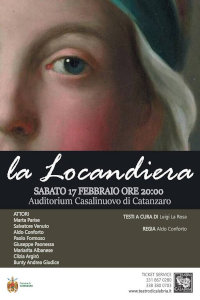

La locandiera: Riassunto, trama e personaggi della commedia di Goldoni. E' una commedia in tre atti di Carlo Goldoni, composta nel 1751, al termine della collaborazione tra il commediografo
e il teatro Sant’Angelo, e messa in scena all’apertura della stagione di carnevale 1752-1753. La trama verte attorno al personaggio della locandiera Mirandolina, che, aiutata dal
cameriere Fabrizio, si trova a doversi difendere dalle proposte amorose dei clienti dell’albergo da loro gestito nei pressi di Firenze.
Al centro delle vicende c’è sempre la vigile e smaliziata intelligenza di Mirandolina, che sa far prosperare la sua attività commerciale e mettere in scacco l’altezzoso
cavaliere di Ripafratta, uno dei suoi pretendenti. La locandiera è considerata uno degli esempi più riusciti della “commedia di carattere” goldoniana,
con cui l’autore veneziano capovolge e rinnova la tradizione della Commedia dell’Arte. La locandina ufficiale della nuova produzione del Teatro di Calabria "LA LOCANDIERA" di Carlo Goldoni,
che debutterà sulle scene catanzaresi sabato 17 Febbraio alle ore 20:00 all'Auditorium Casalinuovo! Un sentito ringraziamento ad Elena Bitonte che ha curato,
con affetto e professionalità, il progetto grafico della locandina che vedrete a breve in tutto il territorio catanzarese!
Si ringraziano gli autori dell'articolo e la redazione di TEATRODICALABRIA FACEBOOK
La Locandiera di Carlo Goldoni - Sabato 17 Febbraio 2018
articolo preso da Facebook dello spettacolo del "Teatro di Calabria Aroldo Tieri" pubblicato nell'anno 2018
Aldo Conforto Al centro delle vicende c’è sempre la vigile e smaliziata intelligenza di Mirandolina
Aldo Conforto Teatro di Calabria "LA LOCANDIERA" di Carlo Goldoni
Aldo Conforto Auditorium Casalinuovo! Un sentito ringraziamento ad Elena Bitonte
La trama verte attorno al personaggio della locandiera Mirandolina

Riccardo Conforto
https://aldoconforto.github.io/teatro/riccardo-conforto-design-e-gestione-del-sito
{kind=link}